Mastering Mixology is a Herblore minigame set in Aldarin. Before its release, the only reliable way to train Herblore was by making potions, which required secondary ingredients and usually resulted in a loss. The minigame changes that entirely — you can train Herblore without any secondary ingredients while still getting better XP per herb than traditional methods.
On top of the XP benefits, it's also a surprisingly profitable method. While playing, you'll accumulate resins, which can be spent on various items in the Mixology store and sold on the Grand Exchange, with profits reaching up to 1.7M GP per hour with the chugging barrel. Overall, Mastering Mixology is one of the best ways to train Herblore if you want solid XP while staying on a budget.
Requirements
Required
How to Get There
The entrance to the minigame is close to center of Aldarin as shown below.
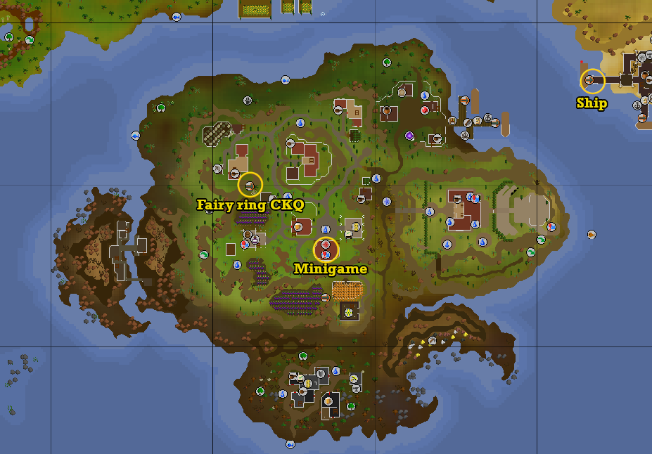
Here are the quickest ways to get there:
- Minigame teleport — by far the fastest option, taking you directly to the entrance
- Fairy ring CKQ — from here, run southeast to the minigame entrance
- Quetzal Transport System to Aldarin — requires partial completion of Twilight's Promise
- Boat from Sunset Coast — costs 20 coins
Playing Mastering Mixology
When you're ready, head to the minigame entrance and climb down the stairs. If it's your first time, Clanila will start a dialogue — just hold space to skip through it. Before you can start, speak to Supervisor Lalo near the ladder and hold the space bar through his dialogue to get his permission.
The minigame is straightforward at its core — you make potions based on the order shown in the top left of your screen, then deposit them on the conveyor belt to earn Herblore XP and resins, which can be spent in the reward shop.
Refining
Each potion in an order requires specific amounts of Mox, Lye, and Aga paste, made by refining your herbs at the refiner. To do this, left-click the refiner with your herbs in your inventory and it will process them one by one automatically. You can speed the process up by repeatedly clicking the refiner.
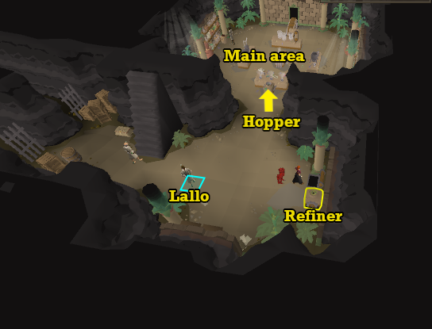
YEach herb produces one of the three paste types in the quantities shown below.
Aga Paste
| Herb | Paste per herb |
|---|---|
| Irit leaf | 30 |
| Huasca | 20 |
| Cadantine | 34 |
| Lantadyme | 40 |
| Dwarf weed | 42 |
| Torstol | 44 |
Mox Paste
| Herb | Paste per herb |
|---|---|
| Guam leaf | 10 |
| Marrentill | 13 |
| Tarromin | 15 |
| Harralander | 20 |
Lye Paste
| Herb | Paste per herb |
|---|---|
 Ranarr weed Ranarr weed | 26 |
| Toadflax | 32 |
| Avantoe | 30 |
| Kwuarm | 33 |
| Snapdragon | 40 |
There's a bank chest right next to the refiner, making it easy to grab herbs and refine them without going far. Just keep in mind that grimy herbs won't work — they need to be clean. Unfinished potions are also accepted if you have those instead.
The paste you make will appear in your inventory and can be deposited into the hopper (highlighted above) by left-clicking it. The Hopper can hold a maximum of 3,000 of each type of paste. Before jumping into orders, it's worth spending some time upfront building up a good stock of paste in the hopper so you're not constantly stepping out to refine mid-run.
Mastering Mixology Plugin
Before getting started, I highly recommend installing the Mastering Mixology plugin on RuneLite. It makes this minigame way easier.
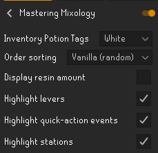
The main features include:
- Appends potion recipes directly to the minigame interface and highlights the correct stations and levers
- Digweed highlights and notifications so you never miss one
- Turns green to indicate the exact moment you should click for each workstation
Mixing Potions
Once you have enough paste, head north into the main area. On entering, the HUD shown below will appear in the top left of your screen showing the potions you need to make (potion orders) and how much of each paste you currently have.
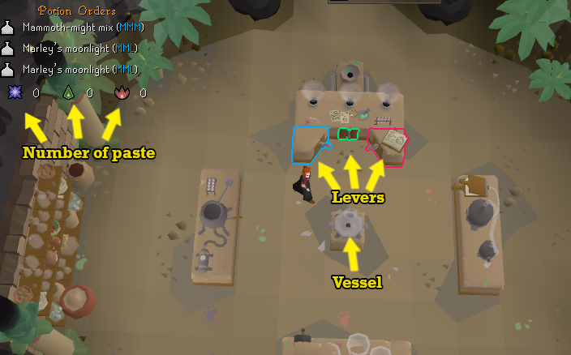
Work through the orders starting from the top. To make a potion, click the levers in the correct order based on the potion's recipe, then click the vessel in the middle of the room to collect it. Each lever has a colour representing a letter in the recipe:
- M Blue lever — Mox paste
- A Green lever — Aga paste
- L Red lever — Lye paste
The Mastering Mixology plugin makes this much easier by highlighting the correct levers in their respective colours and appending the recipe directly to the order as shown above — without it, the colour of the lever are still visible but harder to see at a glance. Once you get the pattern down, it becomes second nature pretty quickly, especially with the plugin guiding you through it.
Here are all possible potion orders. The lever combination shows the levers and the order you need to click them to make each potion. As your Herblore level increases, you'll unlock better potions with higher XP and improved rewards. The weight column represents the likelihood of being assigned that particular potion in an order.
All Potion Orders
| Level | Potion | Levers | Mox | Aga | Lye | XP | Weight |
|---|---|---|---|---|---|---|---|
| 60 | Alco-AugmentAtor (AAA) | AAA | 0 | 20 | 0 | 190 | 5 |
| 60 | Mammoth-Might Mix (MMM) | MMM | 20 | 0 | 0 | 190 | 5 |
| 60 | LipLack Liquor (LLL) | LLL | 0 | 0 | 20 | 190 | 5 |
| 63 | Mystic Mana Amalgam (MMA) | MMA | 20 | 10 | 0 | 215 | 4 |
| 66 | Marley's MoonLight (MML) | MML | 20 | 0 | 10 | 240 | 4 |
| 69 | Azure Aura Mix (AAM) | AAM | 10 | 20 | 0 | 265 | 4 |
| 72 | AquaLux Amalgam (ALA) | ALA | 0 | 20 | 10 | 290 | 4 |
| 75 | MegaLite Liquid (MLL) | MLL | 10 | 0 | 20 | 315 | 4 |
| 78 | Anti-Leech Lotion (ALL) | ALL | 0 | 10 | 20 | 340 | 4 |
| 81 | MixALot (MAL) | MAL | 20 | 20 | 20 | 365 | 3 |
Processing
Once you've made all 3 potions, you need to process them at the workstations. This is the easier part of the process. A potion doesn't always require the same workstation each time — instead, follow the symbols shown next to the potion in the HUD on the top left of your screen to know which workstation to use.
Each symbol represents a specific workstation, as shown below:
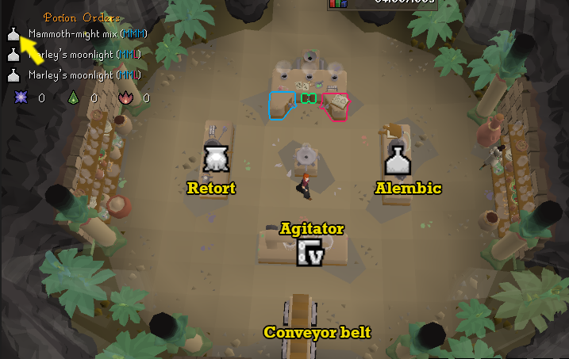
Simply left-click the correct workstation to start processing your potion. When a workstation is clicked, the game will automatically process the first unprocessed potion in your inventory with that workstation so ensure you do them in the right order/ If you have the mastering mixology plugin turned on, it will highlight the correct workstation to use for all 3 of your potions, so you don’t have to worry about that.
Process all 3 potions at their respective workstations as indicated by the icons, then click the conveyor belt to deposit them and collect your XP and resins. Once deposited, a new batch of orders will appear — completely random each time. And that's really all there is to it; complete each order, deposit, and repeat.
Speeding Up Workstations
The slowest part of the process is the workstation processing. Fortunately, you can speed this up by clicking each workstation at specific moments — though the timing is different for each one. Just be aware that clicking at the wrong time will reduce the progress bar, so there's a bit of a learning curve. Once you get the hang of the timing though, the speed gains are well worth the mistakes you make in the beginning.
- Agitator (Homogenising) — Click once to begin, then click again within 2 ticks of the sound or visual cue to speed up the process. With good timing, you can click once per tick within that 2-tick window, netting double the bonus progress. This rewards 14 bonus Herblore XP for the first click and 2 bonus Herblore XP for the second per potion.
- Alembic (Crystallising) — Click once to begin, then click again when the bellows fully opens for the 4th time, rewarding 14 bonus Herblore XP per potion. If you miss the timing, don't panic — you can still get the bonus by clicking again on the 7th pump after the initial failure.
- Retort (Concentrating) — Click constantly every tick to speed up the process, earning 2 bonus Herblore XP per click. The total bonus XP you gain will vary depending on your level — lower-level players actually benefit more here since their potions take longer to process, giving them more clicks overall.
Digweed
Every couple of minutes a Digweed will spawn on one of the flowers in the corners of the room, indicated by a message in the chatbox. Left-click that flower to pick the Digweed. The Digweed can be added to any potion before or after processing, and it doubles both the XP and resins that the potion gives when deposited.
I recommend always using it on a potion that contains Lye , as this gives you more XP and more Lye points, which are needed for most of the rewards in the shop. The spawn rate of the Digweed depends on your Herblore level. At 81+ Herblore, a Digweed should appear roughly once every 7 minutes of activity in the minigame.
Tips & Tricks
- Never turn in unordered potions — you'll only receive half the XP and resins
- Always use the Digweed on MixALot, as it gives the most XP and resins
- Where possible, process orders at the same workstation to cut down on unnecessary movement
- Skip triple paste orders when chasing the best XP rates, and only make them when MixALot is in the order
Best Methods
Best Method for XP
To get the most XP out of the minigame, you need to make 3 of each potion type all at once and process one of each at the 3 different workstations. This lets you spam-click the conveyor belt to deposit potions as long as you have at least one potion in every order in your inventory — the game will always pick the correct potion for the order regardless of where it sits in your inventory.
I recommend setting up your inventory as shown below to keep things organised. Start by making 3 of the first potion in the top row (MMA), then move on to the next row. Once you've completed the rows, move on to the columns, making sure to place each potion in the correct position. The Mastering Mixology plugin makes this significantly easier to manage.
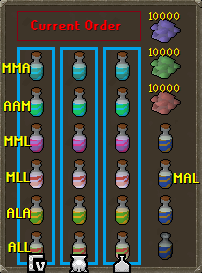
Once all your potions are made, move to each workstation and process one of each potion type there before moving on to the next. Processing one of each at a single workstation before moving minimises unnecessary movement and keeps your run flowing smoothly.
The main downside to this method is reduced resins — depositing all 3 orders at once gives 40% more resins, but with this method, you'll often be depositing only 1 or 2 potions at a time. Always make sure you have at least one complete order before depositing to ensure you're getting the right amount of XP.
Done correctly, this method can reach up to 100,000+ Herblore XP per hour at 81+ Herblore when all potions are available.
Best Method for Points
The best strategy to maximise points per paste is to make every potion in an order except for single paste potions (MMM, AAA, or LLL) — unless the order contains an MAL potion, in which case it's worth making all of them including the single paste ones. If an order consists entirely of single paste potions, just make whichever one gives you the most desirable points and turn it in to skip the order quickly. This approach gives you the best overall points per paste across all three types — Mox, Aga, and Lye. .
Mastering Mixology on Ironman
Since Mastering Mixology offers better XP per herb and removes the need for secondary ingredients, it makes Herblore significantly faster to train on an Ironman. That said, if you're regularly doing Slayer or PVM where herbs and secondaries drop naturally, the traditional method can still be more efficient overall.
I recommend using Mastering Mixology to unlock some of the more useful rewards and to quickly reach the Herblore level needed to make better potions. Some players use it up to level 70, others push it to 90 — it comes down to how naturally you can source herbs through other activities.
XP Rates
XP per hour scales with your level, starting at 50,000 at level 60 up to 105,000 XP per hour at level 81.
Rewards from Mastering Mixology
Spend your resins at the Mixology reward shop by speaking to Supervisor Lalo.
Potion Packs
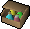
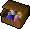
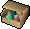
Outfit
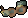
Notable Rewards
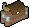
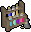
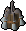
.png)
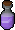